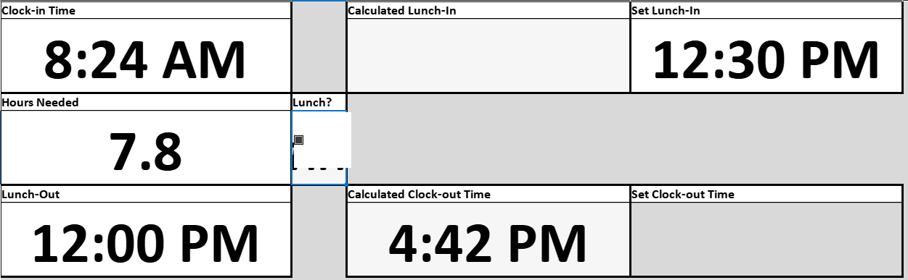
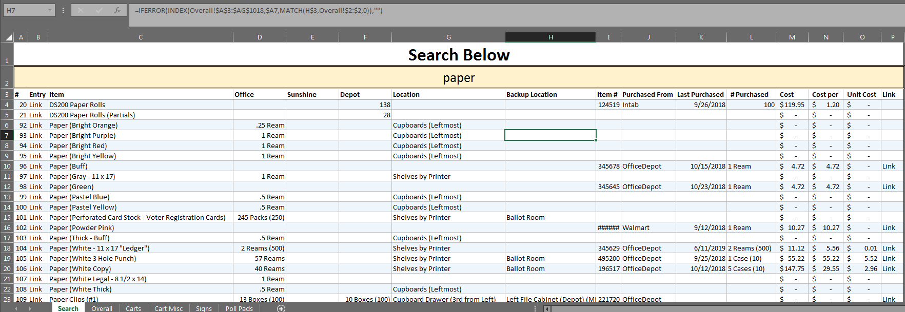
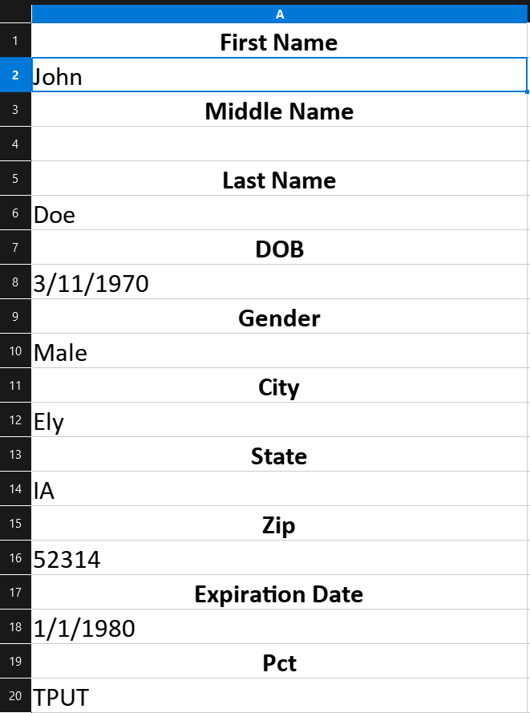
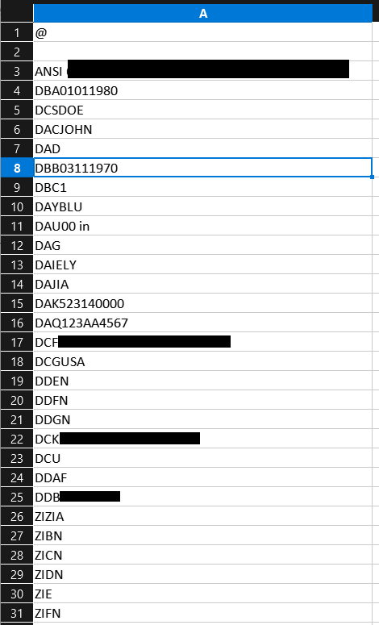
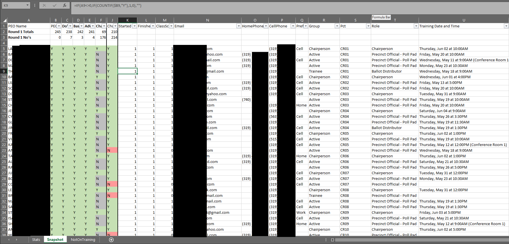
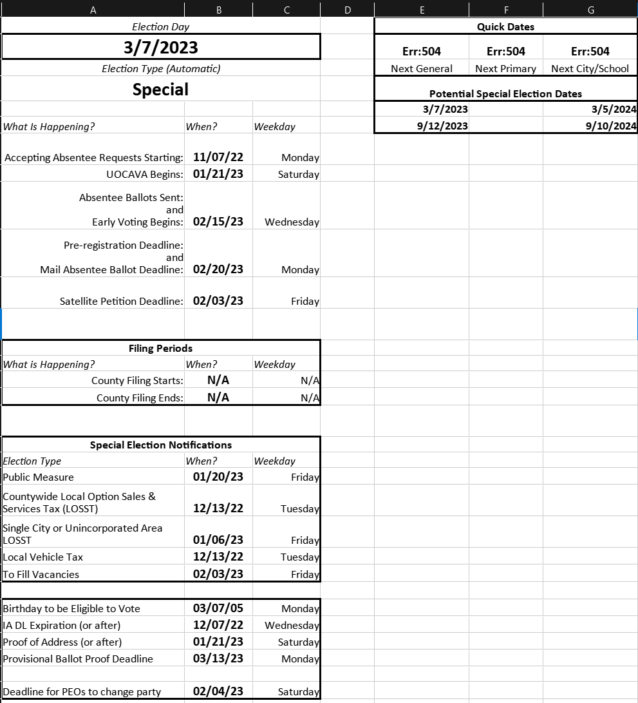
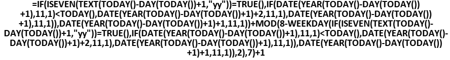
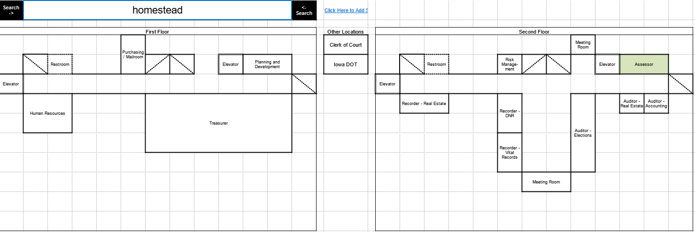
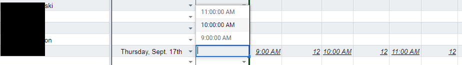
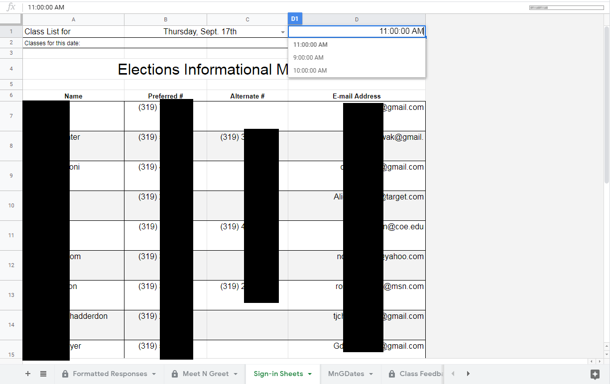

<<< Go Back
Excel and Google Sheets
Usually my go-to was Access Databases when managing data, but there were several instances where I used Excel instead out of preference or because Access couldn't do what I needed.
Everybody uses Excel, but I used it for some crazy things. Some examples:
- Calculating clock out times to hit a certain number of hours.
- Generating a batch file to set up hundreds of laptop users with specific passwords based on the computer number. (so we didn't have to set each manually anymore. No screenshot of this one)
- A searchable inventory database.
- Assigning election workers.
- Using a macro to generate ballot marking instructions for hundreds of ballots to get unique results for each candidate. (I have a video of this, but it's not pretty and it doesn't really explain anything.)
- Generating barcodes for scannable training IDs.
- Providing visual snapshots of online training progress based on an exported report.
- Automatic calculation of election type and deadlines based on election date.
- A map of the building, where you can type keywords and it will highlight the applicable department.
- (Google Sheets) Assisting with assigning potential election workers to recruitment meetings.
- (Google Sheets) Automatically generating sign-in sheets for the above classes










<<< Go Back